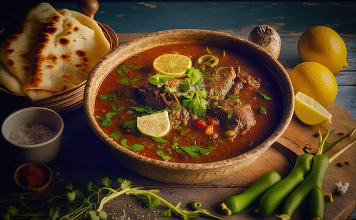

নলার ঝোল রেসিপি

বছর ঘুরে ফিরে এসেছে কোরবানির ঈদ। ঘরে ঘরে চলে বাহারি স্বাদের গরুর মাংসের নানা খাবার রান্না।
তবে তা মজাদার না
হলে
কি চলে। তাই চলুন ঈদকে সামনে রেখে জেনে নেয়া যাক মাংসের কয়েকটি মজাদার রেসিপি।
নলার ঝোল রান্নার রেসিপি তৈরির উপকরণঃ-
- গরুর পায়া ১ কেজি,
- পেঁয়াজ কুচি ১ কাপ,
- আদা কুচি ২ টেবিল চামচ,
- হলুদ গুঁড়া আধা চা-চামচ,
- মরিচ গুঁড়া ১ চা-চামচ,
- আদা কুচি ২ চা-চামচ,
- আদা কুচি ২ টেবিল চামচ,
- বড় ও ছোট এলাচি ৭-৮টা,
- শাহি জিরা ১ চা-চামচ,
- গোলমরিচ গুঁড়া ১ চা-চামচ,
এলাচি ও দারুচিনি কয়েকটা,
তেজপাতা ২-৩টা,
লবণ স্বাদমতো,
বাদাম বাটা ১ টেবিল চামচ,
পানি ৫-৬ কাপ।
- নলার ঝোল রান্নার রেসিপি তৈরির প্রণালীঃ-----
তেলে পেঁয়াজ ভেজে সব মসলা কষিয়ে গুরুর পায়া দিয়ে ভালোভাবে কষিয়ে পানি দিতে হবে।
অল্প আঁচে ৫-৬ ঘণ্টা সেদ্ধ করতে হবে।
নামিয়ে ভাত অথবা নানরুটির সঙ্গে গরম গরম পরিবেশন করুন।